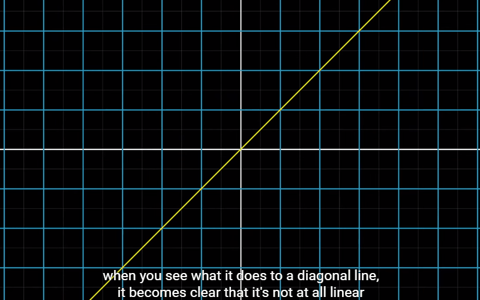
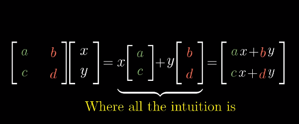
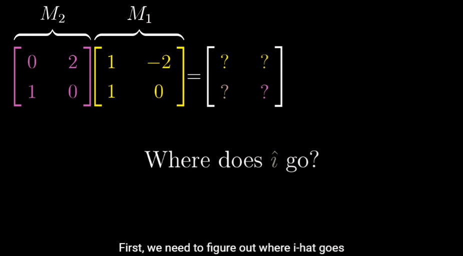

Linear Algebra[1] - Linear Transformations and Matrices
Based on a great series that introduce linear algebra Essence of linear algebra - 3blue1brown. This blog covers ch3, ch4 and ch5.
What is Linear Transformation
A transformation is basically a function that takes an input vector to generate some output vector. In our imagination, the vector is moved smoothly to a new position. So we call it a transformation instead of a function.

To understand the transformation as a whole, we might think of every vectors in the space conceptualized as single points.

The effect of various transformation is beautiful. Although, as we can imagine, arbitrary transformation can look pretty complicated.

Luckily linear transformaiton limits itself to a special type of transformation, ones that are easier to understand. Visually, a linear transformation has two properties:
- All lines remain lines.
- Origin remain fixed.
In general, we can think of linear transformations as keeping grid lines parallel and evenly spaced.

How to describe linear transformation
As it turns out, you only need to record where the two basis vectors, and , land. Because every vector that started off as a certatin combination of and , will ends up with that same linear combination of where those two vectors landed.

As a result, a 2D linear transformation is completely described by just 4 numbers: the two coordinates for where lands, and the two coordinates for where lands. And it’s common to package these coordinates into a 2-by-2 grid of numbers, called a , where you can interpret the columns as the two special vectors where and each land.

Now we can think about these columns as the transformed versions of the basis vectors, and the results of transformations as the appropriate linear combination of those vectors.

A special case is that, when the vectors that and land on are linearly dependent, which means that one is a scaled version of the other. It means that the linear transformation squishes all of 2D space onto the line where those two vectors sit, also known as the one-dimensional span of those two linearly dependent vectors.

Push it further
Matrix multiplication as composition
The composition of two transformations can be represented by single transformation, which captures the overall effect of applying those two actions successively. This new matrix is called the product of the original two matrices.

Always remember, the multiplying two matrices like this has the geometric meaning of applying one transformation then another. But one thing that’s kinda weird here, is that this has reading from right to left.

Applying the method mentioned above of finding where and each land, we could figure out the multiplied matrix.

Notice, there’s a lot of symbols here, and it’s common to be taught this formula as something to memorize along with a certain algorithmic process to kind of help remember it.

But before memorizing that process, just get in the habit of thinking about what matrix multiplication relly represents: applying one transformation after another. This will give you a much betterh conceptual framework that makes the properties of matrix multiplication much easier to understand.
3-dimensional matrix
In 3D spaces, it’s nothing different to 2D spaces but there’s one more basis vector on the z-axis, .
Conclusion
Every time you see a matrix, you can interpret it as a certain transformation of space. Once you really digest this idea, you’re in a great position to understand linear algebra deeply. Almost all of the topics coming up will become easier to understand once you start thinking about matrices as transformations of space.